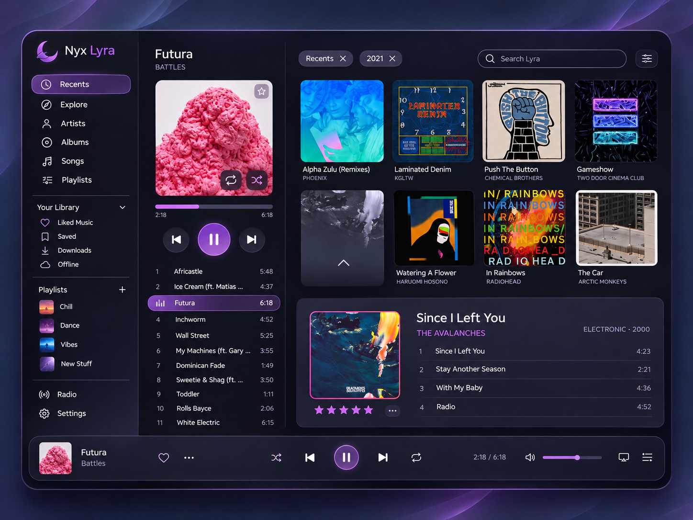

<!doctype html>
<html lang="en" data-accent="violet" data-screens="a,b,c,d,ref">
<head>
<meta charset="utf-8">
<title>Directions — Nyx Lyra mockups</title>
<link rel="stylesheet" href="../polish/tokens.css">
<link rel="stylesheet" href="../polish/mock.css">
<link rel="stylesheet" href="../polish/nyx-after.css">
<link rel="stylesheet" href="lyra.css">
<script src="../polish/mock.js"></script>
</head>
<body>
<script src="lyra.js"></script>
<script>
  // The main window on Home, four ways. A and D share a layout; D breaks 2.0.
  // B: shelves, no column.
  const homeB = () => `<div class="main">
    ${chips(moods)}
    ${shead("Quick picks", "Start radio from a song", `<button class="btn">${icon("play")}Play all</button>${arrows()}`, "first")}
    ${songs(SONGS.slice(0, 9), 3, { each: (i) => ({ on: i === 0, hover: i === 4 }) })}
    ${shead("Listen again", "", `${more()}${arrows()}`)}
    ${shelf(ALBUMS.slice(0, 7).map((a, i) => alb(a, { hover: i === 1 })), 158)}
    ${shead("Mixed for you", "", `${more()}${arrows()}`)}
    ${shelf(MIXES.map((m) => mixTile(m)), 158)}
  </div>`;

  // C: content with the panel on the right.
  const rpanel = () => `<div class="rpanel">
    <div class="art ${NOW.g} cv npart"></div>
    <div class="npmeta"><div class="grow"><div class="t">${NOW.t}</div><div class="a">${NOW.a} · ${NOW.al}</div></div>${ib("heartf", "Unlike (L)", "acc")}${ib("more", "More")}</div>
    <div class="seg"><button class="on">Up next</button><button>Lyrics</button><button>Related</button></div>
    <div class="from" style="margin:2px 2px 6px;display:flex"><span class="ter xs">Playing from <span class="dim">Midnight City radio</span></span></div>
    <div class="list">${QUEUE.slice(0, 6).map((q, i) => qrow(q, i === 0)).join("")}</div>
  </div>`;
  const homeC = () => `<div class="main">
    ${chips(moods)}
    ${shead("Listen again", "", `${more()}${arrows()}`)}
    ${grid(ALBUMS.slice(0, 8), 4, { each: (i) => ({ hover: i === 5 }) })}
    ${shead("Mixed for you", "", `${more()}${arrows()}`)}
    ${grid(MIXES.slice(0, 4).map(([n, d, g]) => [g, n, d]), 4)}
  </div>`;

  if (SCREEN === "ref") {
    mount(`<div class="cmp">
      <figure><figcaption><b>The concept image</b><span>Neon Futura</span></figcaption>
        <ul><li>Its purple is Lyra's accent here; every theme and accent restyles it.</li>
        <li>Radio, Downloads and Offline are gone: Radio is Nyx Music's, and Lyra doesn't download.</li>
        <li>The column's transport moved to the bar, so there is one set of controls.</li></ul></figure>
      <figure><div class="frame"><iframe src="directions.html?screen=a&theme=${ROOT.dataset.theme}&shot=1"></iframe></div><figcaption><b>Direction A</b><span>The same layout in Nyx Design 2.0 · 1280 × 800</span></figcaption>
        <ul><li>One surface: no panels or glows; structure from spacing, the selection pill and one card.</li>
        <li>Inter at 400/500/600, radii 7, 11 and 15, a 212 px sidebar that turns into icons below 980 px.</li>
        <li>The filter chips became YouTube Music's moods; the featured album is a recommendation.</li></ul></figure>
    </div>`);
  } else {
    const page = { a: `<div class="lp">${npcol()}${homeA()}</div>`, d: `<div class="lp">${npcol()}${homeA()}</div>`, b: homeB(), c: `<div class="lp">${homeC()}${rpanel()}</div>` }[SCREEN];
    mount(win({
      hdr: header("Home"),
      side: sidebar("home"),
      page,
      foot: pbar(SCREEN === "c" ? { slim: true, queueOn: true } : {}),
      over: SCREEN === "d" ? `<div class="backdrop"><div class="art ${NOW.g} blur"></div><div class="art ${NOW.g} blur b2"></div></div>` : "",
    }), SCREEN === "d" ? "imm" : "");
  }
</script>
</body>
</html>
